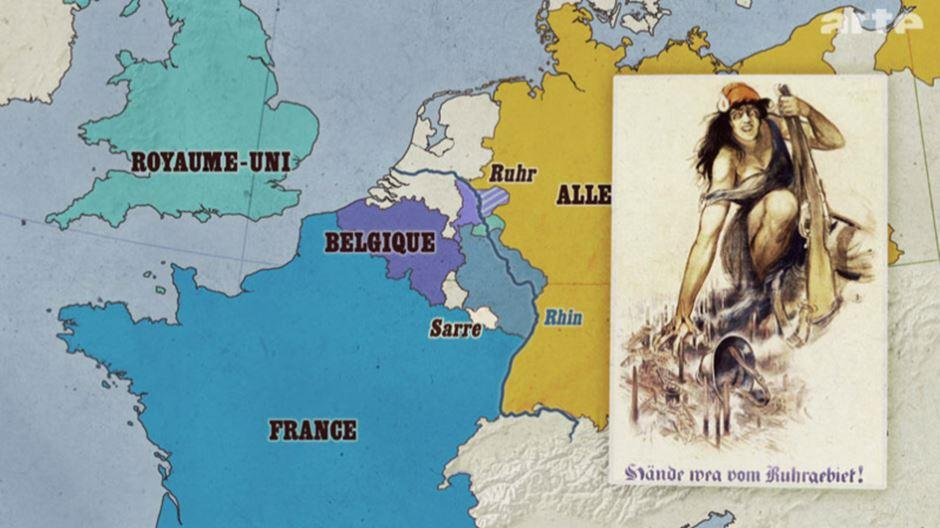

Élue vendredi 7 décembre 20181 à la tête de la Christlich Demokratische Union2 Madame Annegret Kramp-Karrenbauer (ou AKK), ancienne secrétaire générale du Parti3 est devenu la nouvelle « cheffe » du parti conservateur de la République Fédérale d’Allemagne et a pris les rênes de ce mouvement après 18 ans de règne d'Angela Merkel. Elle est désormais le nouveau visage chargée d’amener la CDU à étoffer une période « après Merkel » ; non seulement pour l’Allemagne mais aussi pour l’Europe et le reste du monde.
Méconnue à Paris où le tropisme politique des élites intellectuelles françaises se focalise essentiellement sur la capitale fédérale, ceux-ci occultent classiquement les exécutifs des Länder allemands. Aussi, la majorité des analystes et journalistes politiques français ne connaissent pas et découvrent en conséquence la nouvelle cheffe de la CDU venant d’une région allemande encore moins connue : la Sarre.
Mais AKK n’est pas une inconnue dans le contexte franco-allemand et je laisse, en conséquence, bien volontiers la place à mes « collègues » le soin d’élaborer, d’analyser et commenter la victoire d’AKK. Pour ma part, le sujet que je souhaite traiter est de tout autre nature. Entretenant depuis de très nombreuses années des relations étroites avec le Land de Sarre j’ai eu le privilège d’avoir pu rencontrer et m’entretenir au fil des années avec certains des « Ministrerpräsidenten » de Sarre en exercice dont l’intéressée. Aussi je voudrais, en ma qualité de Président de l’ORFACE, mettre en exergue la « passionaria » de la coopération franco-allemande comme le rappelait un journaliste d’ARTE. En effet, considérée comme la dauphine pour le poste de chancelière allemande son éventuelle élection en septembre 2021 permettrait de relancer de façon plus conséquente la coopération entre la France et l’Allemagne. Convaincu de l’impérieuse nécessité d’une coopération plus étroite entre nos deux pays elle représente aujourd’hui, au même titre qu’Adenauer ou Kohl, l’espoir de toutes celles et ceux qui œuvrent depuis des décennies pour une véritable relance de la coopération franco-allemande qui est plus que nécessaire en ses temps troubles des montées des populismes en Europe. Mais avant toute chose il me parait dans un premier temps indispensable d’aborder la petite histoire franco-allemande de ce Land frontalier avec le Grand Est, de découvrir le parcours politique d’AKK et de découvrir les actions bilatérales menées par l’intéressé depuis plusieurs années.
PETITE HISTOIRE FRANCO-SARROISE
Du fait de son histoire, et de ses occupations successives par la France, les relations avec la Sarre furent souvent tendues mais connaissent depuis la fin de la seconde guerre mondiale et surtout par la politique de réconciliation mis en place par le général de Gaulle et le chancelier Adenauer en 1963 une vivacité qui cherche son pareil et qui fait de la Sarre un Land pionnier dans de nombreux domaines de coopérations bilatérales.
En 1792, la première guerre de coalition amène la France à occuper toute la rive gauche du Rhin pour en faire par la suite le département de la Sarre.
Pendant la domination napoléonienne, la région a partagé les fortunes du premier empire mais également les réalisations de la Révolution française ont été préservées en tant que Code civil, mais après le congrès de Vienne, la plus grande partie de la Sarre actuelle est dépecée et tombe aux mains des multiples royaumes allemands.
Au 19ème siècle, l’extraction du charbon et l’industrie du fer et de l’acier se développent. Après la guerre franco-allemande de 1870/71 et la bataille de Spichern aux portes de Sarrebruck, la fondation du Reich allemand et l'annexion de l'Alsace-Lorraine ont conduit à la création d'un espace économique commun à la frontière française. La Sarre devient la troisième plus grande zone industrielle lourde du Reich allemand, appelée « district de la Sarre » puis en 1890, principalement la « région de la Sarre ».
Après la défaite du Reich allemand en 1918, les troupes françaises occupent la Sarre. Dénommé dès lors « territoire du bassin de la Sarre » la région est placée sous la tutelle de la Société des Nations. En 1920, elle est placée sous administration française avec un mandat de pour 15 ans. Sur le plan économique, la Sarre est intégrée à la zone douanière et monétaire française. 
L'occupation de la Sarre par les troupes françaises incitent les habitants à vouloir intégrer le Reich allemand. En 1935, un référendum sur le statut futur de la Sarre a lieu et l’immense majorité des habitants de la Sarre votent à 90,73 % pour une union avec l'Allemagne nazie (et seulement 0,4% des électeurs pour une union de la Sarre avec la France.) Aussi, la région de la Sarre rejoint le 1er mars 1935 pleinement le Reich d’Adolf Hitler.
En 1945, la France envisage de scinder toute la rive gauche de l’Allemagne. Toutefois, lors de la conférence des ministres des Affaires étrangères des pays alliés, ce projet est rejeté, en référence à la Charte de l’Atlantique, selon laquelle il ne devait y avoir aucune modification territoriale incompatible avec les souhaits librement exprimés des peuples concernés. Le 10 juillet 1945, les forces d'occupation françaises s’installent en Sarre.
À la fin de 1946, le pays devint un protectorat français doté de sa propre constitution et de son propre gouvernement. Le préambule de la constitution prévoyait un lien économique fort avec la France fort.
Le 15 novembre 1947, le franc français devient le moyen de paiement officiel et le 23 mars 1948, l'union douanière est officiellement confirmée.
En juillet 1948, tous les habitants de la Sarre obtiennent leur citoyenneté « Sarroise ». Adenauer contacte le « nouveau gouvernement » de la Sarre et aboutit dans le cadre des accords de Paris à la signature du Statut4 de la Sarre le 23 octobre 1954.
Mais le 23 octobre 1955, un référendum sur l'avenir du pays est finalement organisé où la grande majorité des Sarrois votent contre le statut. Le résultat du référendum est évalué par les dirigeants politiques des gouvernements participants comme un souhait des Sarrois d’intégrer la République fédérale d’Allemagne.
Le 27 octobre 1956, l'accord sur la Sarre est conclu à Luxembourg et le 1er janvier 1957, la Sarre devient le 10ème Land de la République fédérale d'Allemagne.
ANNEGRET KRAMP KARRENBAUER
AKK est née à Völklingen en 1962 et est une enfant du Traité de l’Élysée. Bien que ces parents ne soient pas politiquement engagés ils discutent beaucoup de politique devant la jeune Annegret qui devient le témoin quotidien et intéressés de ses entretiens en y portant avec l’âge un intérêt de plus en plus croissant.
Le déclic pour son engagement actif en politique se révèle suites aux évolutions politiques qui surgissent au début des années 1980 ainsi qu’en Iran, mais c’est surtout la place et le rôle qu’occupe la femme au sein de la société allemande qui l’interpelle et à laquelle elle veut pouvoir apporter des solutions. Catholique pratiquante, son choix se porte en faveur de la CDU Saar, où elle rejoint en 1981 la Junge Union qui est le mouvement de jeunesse de la CDU.
Tout en faisant de la politique, elle obtient son baccalauréat en 1982, et devient membre du comité exécutif de la Junge Union Saar où elle y exercera les fonctions de vice-présidente de 1985 à 1988. Elle y rencontre un certain Peter Müller qui deviendra quelques années plus tard son mentor. Elle suit avec une attention particulière les bouleversements qui se dessinent en Allemagne de l’Est, où son Parti la CDU œuvre sous le chancelier Kohl pour une rapprochement puis une Réunification future. Durant cette époque historique, elle suit des études le droit et les sciences politiques à l'Université́ de Trèves et de Saarbrücken et obtient en 1990 son Diplôme en sciences politiques et en droit public avec mention l’année de la Réunification allemande.
AKK et Peter Müller
Elle se fait remarquer et sera nommée par les instances du mouvement pour occuper les fonctions d’agent de planification de la CDU Saar sous l’autorité du ministre de l’environnement de l’époque Klaus Töpfer de 1991 à 1998. Tout au long de ses années elle acquiert de la maturité politique et se crée son réseau. C’est alors que son ami de la Junge Union Peter Müller, entre temps devenu Président du groupe parlementaire CDU Sarre, lui propose de devenir sa cheffe de cabinet en 1999. Ce choix va être le déclencheur de la carrière politique d’AKK, car la même année les élections ont mis fin en septembre, à 14 ans de gouvernement de la Sarre dirigé par le parti socialiste. Le nouveau ministre président du Land de Sarre ne sera qu’autre qu’un certain Peter Müller.
Son engagement et sa loyauté politique seront récompensés et Peter Müller lui attribuera rapidement des fonctions ministérielles importantes au sein du gouvernement régional. Elle occupera durant plusieurs années les fonctions suivantes : Ministre de l'Intérieur et des Sports (2000 – 2004) ; Ministre de l'intérieur, de la famille, de la femme et des sports (2004 – 2007) ; Ministre de l'éducation, de la famille, de la femme et de la culture (2007 – 2009) ; Ministre du travail, de la famille, de la prévention, de la protection et des sports (2009 – 2011). Durant toutes ces années elle se familiarise non seulement avec la politique locale mais également fédéral.
C’est alors que Peter Müller, après avoir dirigé la CDU Saar durant 16 ans, décide le 22 janvier 2011, de quitter son poste afin de se consacrer au droit et pouvoir siéger au deuxième Sénat de la Cour constitutionnelle fédérale. Après de nombreuses tractations au sein du Parti le choix se porte sur AKK et le 28 mai 2011, Annegret Kramp-Karrenbauer est élu avec une majorité écrasante des voix comme remplaçante de Peter Müller et comme première femme de ce bureau à succéder à un homme.
MINISTRE PRÉSIDENT DE LA SARRE ET PLÉNIPOTENTIAIRE FRANCO-ALLEMANDE
Le 10 août 2011, AKK se présente à l'investiture du Landtag de Sarre où elle sera élue ministre-présidente de la Sarre au second scrutin. Le 31 août suivant, elle devient « plénipotentiaire de la République fédérale d'Allemagne5, chargée des relations culturelles franco-allemandes », qui assure aux autorités françaises un interlocuteur unique en matière de politique culturelle, celle-ci étant gérée par les Länder allemand.
Dès « ses » prises de fonctions AKK s’engage fortement en faveur des relations franco-allemandes ou elle veut redynamiser les coopérations décentralisées et tout particulièrement avec la Lorraine, région partenaire de l’époque, dans de nombreux domaines : formation, mobilité, langue.
En effet, grâce à la proximité de la Lorraine avec la Sarre, ce ne sont pas moins de 18 000 travailleurs frontaliers lorrains qui en moyenne traversent quotidiennement la frontière pour aller travailler en Sarre6 ou en Rhénanie-Palatinat. Alors que plus de 1 000 travailleurs frontaliers allemands viennent travailler chaque jour en Lorraine. Ainsi sous l’impulsion d’AKK la Sarre mènera avec le Conseil Régional de Lorraine de nombreuses coopérations.
Elle est également particulièrement engagée en faveur de la Jeunesse et de la Formation en finançant chaque année l’apprentissage de la langue7. Trois exemples d’actions innovantes liant à la fois la langue, la culture ou la formation sont à mentionner : la valise pédagogique transfrontalière8 qui est un nouvel outil pédagogique ludique destiné aux enfants sarrois et lorrains âgés de 6 à 10 ans. Elle sera offerte à des établissements scolaires et associations. Elle ambitionne de sensibiliser les enfants à la fois à la langue du partenaire mais aussi à la culture des régions partenaires de la Grande Région.
L’École de la Deuxième Chance franco-allemande s'adresse aux jeunes demandeurs d'emploi sans qualification du bassin transfrontalier Sarre-Moselle. Au vu du constat de la situation de l'emploi et de l'insertion sur ce bassin, il est apparu opportun de développer un projet entre les deux pays. L'objectif de ce projet franco-allemand est d'amener des jeunes en difficulté́ d'insertion et ne pouvant accéder à l'apprentissage, à se qualifier et s'insérer professionnellement, grâce à une démarche de formation et d'accompagnement qui s’appuie sur une école de Forbach et sur le Centre de formation professionnelle de Völklingen.
Le Groupe de travail « Emploi-Formation9 » constitue quant à lui un groupe de travail sarro-lorrain qui doit pouvoir répondre aux défis communs auxquels la Lorraine et la Sarre sont confrontées (notamment dans les domaines de la formation, de la mobilité́ et de la connaissance de la langue du partenaire. A l’initiative de la Ministre présidente de la Sarre une table ronde fut organisée traitant de l’enseignement professionnelle initiale et continue transfrontalier, ayant pour but que les jeunes puissent suivre les cours théoriques dans leur pays respectif et ensuite poursuivre les cours pratiques dans une entreprise du le pays voisin. C'est ainsi que pendant son mandat que fut ouvert le premier lycée professionnel franco-allemand.
Comme plénipotentiaire de la République Fédérale chargée des relations culturelles franco-allemandes dans le cadre du traité sur la coopération entre les deux pays elle jouera à ce titre un rôle très important dans la coopération entre la France et l’Allemagne durant son mandat.
Elle favorise et développe les nombreuses institutions franco-allemandes qui ont leur siège à Saarbrücken capitale du Land : Haut conseil franco-allemand, Université franco-allemande, Antenne de l’Office franco-allemand pour la jeunesse, prix du journalisme franco-allemand, etc. et c’est sous impulsion que la Sarre devient la plaque tournante dans les échanges entre nos deux pays
En 2016, venue exposer sa véritable vision d'avenir pour l'Europe, à la Maison du barreau, à l'invitation du bâtonnier, Frédéric Sicard
Aussi il faut saluer son engagement sans concessions en faveur des relations entre la France et l’Allemagne et tout particulièrement son offre en formations professionnelles transfrontalières qui fait la part belle à l’apprentissage de la langue du pays voisin et se poursuit au fil de la scolarisation jusqu’à une véritable formation professionnelle, que jeunes Allemands et Français sont invités à poursuivre dans le pays voisin.
Dans la probabilité qu’en 2021 elle puisse obtenir l’investiture suprême en Allemagne nous savons par avance qu’à la tête d’une des nations les plus puissantes économiquement d’Europe et du monde nous aurions une véritable « amie » de la coopération franco-allemande.
J.-P. P. - En 2013, vous avez lancé un projet visant à faire du français une langue véhiculaire en Sarre, au même titre que l'allemand, y compris dans l'administration. Est-ce à dire que tous les écoliers devront parler français ?
A. K.-K. - Oui, notre objectif à long terme est que les générations qui naissent aujourd'hui deviennent bilingues. Ce n'est pas quelque chose qu'on peut décréter, mais nous soutenons à fond cette évolution. L'apprentissage doit commencer dès le plus jeune âge. Il ne s'agit pas d'apprendre le français en tant que deuxième langue, mais de le parler au quotidien en tant que langue de voisinage. Actuellement, 40 % des maternelles de Sarre sont bilingues. Nous voulons aller plus loin et faire en sorte qu'à la fin du primaire tous les enfants parlent français. À partir de la 6e, ils pourront alors débuter l'anglais. Nous voudrions aussi que le français soit une langue présente dans la vie publique, que les panneaux indicateurs, les formulaires administratifs, les accès Internet soient rédigés également en français. Le plurilinguisme sera évidemment un atout pour nos concitoyens.
A.W.
Notes :
1. À l’occasion du 18e congrès fédéral de la CDU à Hambourg, AKK postule à la présidence en remplacement d'Angela Merkel, qui avait pris la décision de renoncer à un nouveau mandat après les élections régionales hessoises. Opposée au ministre fédéral de la Santé Jens Spahn et à l'ancien président du groupe parlementaire Friedrich Merz, elle l'emporte au second tour de scrutin contre ce dernier avec 517 voix contre 482 à son concurrent.
2. L’Union chrétienne-démocrate d'Allemagne est un parti politique allemand, libéral-conservateur, fondé en 1945. Se référant à la démocratie chrétienne européenne, la CDU est la principale force de centre droit en Allemagne. Elle n'est pas présente sur le territoire de l'État libre de Bavière, où la tendance démocrate-chrétienne est représentée par l'Union chrétienne-sociale (CSU). Au niveau fédéral, on parle donc de la CDU/CSU (en allemand : Unionsparteien). Au pouvoir entre 1949 et 1969 avec Konrad Adenauer, Ludwig Erhard et Kurt Georg Kiesinger, de 1982 à 1998 avec Helmut Kohl et depuis 2005 avec Angela Merkel, la CDU détient le record de longévité à la direction du gouvernement fédéral.
3. Elle est officiellement élue secrétaire générale le 26 février 2018 lors d'un congrès extraordinaire. Elle recueille soit 98,6 % des suffrages exprimés. C'est le meilleur résultat jamais enregistré pour la désignation d'un secrétaire général de la CDU. Quelques instants avant le scrutin, elle avait reçu de très fortes acclamations à l'issue de son discours, plus importantes que celles ayant suivi l'intervention d'Angela Merkel. Tobias Hans prend sa suite dès le 1er mars. Elle est alors la première femme à quitter volontairement le pouvoir en Allemagne.
4. Le statut de la Sarre était la vision du Premier ministre de la Sarre, Johannes Hoffmann, qui souhaitait faire de la Sarre le premier territoire européen. La planification de districts entiers à Sarrebruck et aux alentours, qui devrait englober les institutions européennes actuellement à Bruxelles, à Luxembourg et à Strasbourg, avait déjà commencé.
5. La fonction de Plénipotentiaire a été créée par le Traité de l’Élysée du 22 janvier 1963.
Ses compétences dans le domaine de l’éducation et en matière de coopération résultent du chapitre du Traité consacré à l’« Éducation et [la] jeunesse ». Les missions du Plénipotentiaire ont été explicitées par un accord intervenu entre l’État fédéral allemand et les Länder le 6 février 1969. Cet accord lui reconnaît un rang comparable à celui d’un ministre fédéral. Il lui assure une position forte et lui permet d’être membre du Conseil des ministres franco-allemand. Les Affaires culturelles et l’éducation relevant en Allemagne fédérale de la compétence exclusive des 16 Länder, le Plénipotentiaire les représente sur ces sujets dans le cadre de la coopération franco-allemande. La partie française peut ainsi s’adresser à un interlocuteur unique, ce qui permet de faciliter et de promouvoir les relations culturelles bilatérales.
6. Principalement dans l'industrie, par exemple chez Michelin à Homburg, mais aussi chez Ford à Sarrelouis ou ZF à Sarrebruck. Inversement, des Sarrois travaillent en France, mais la plupart se tournent vers le Luxembourg. La France, le Luxembourg, la Rhénanie-Palatinat et la Sarre forment aujourd'hui un vaste bassin d'emploi.
7. Soutien aux classes ABIBAC, sections européennes de langue allemande, formations pour demandeurs d’emploi, salariés, bourses de stages.
8. La Valise pédagogique transfrontalière est initiée par le Conseil Régional de Lorraine et par le ministère sarrois de la Culture et de l’Education le 28 novembre 2012 par la signature d’une convention. cette valise comporte : un calendrier mural grand format qui accompagnera les enfants durant leur année scolaire en présentant la situation géopolitique, les différences et les ressemblances entre les partenaires de la Grande Région ; des éléments immatériels pédagogiques téléchargeables prenant notamment la forme de fiches à destination des équipes enseignantes et de toutes les structures souhaitant en bénéficier ; des éléments mixtes de ressources tels que le recensement en Allemagne et en France de tout le matériel pédagogique à destination de la jeunesse et visant à apprendre la langue du voisin ; un répertoire d’artistes sarrois et lorrains pouvant intervenir dans des écoles.
9. Il devra à cet effet permettre un recensement des besoins en formation des entreprises sarroises et de définir des formations possibles qui pourront être mises en place côté lorrain pour des publics cibles variés (apprentis, étudiants, salariés, demandeurs d’emploi,...).
Partager cette page